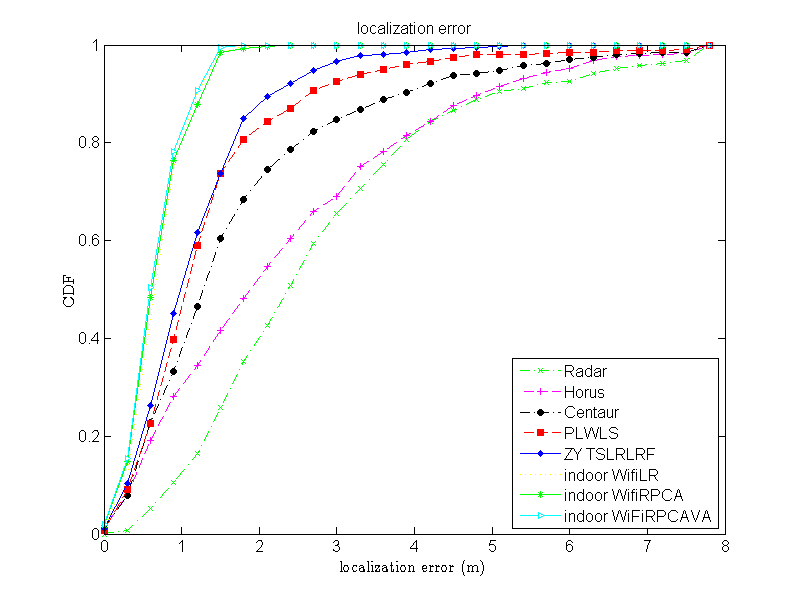
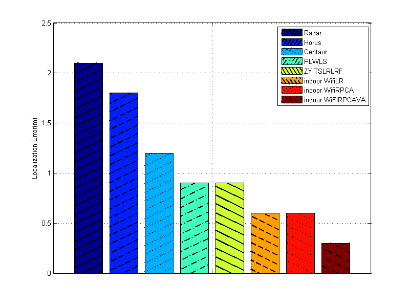
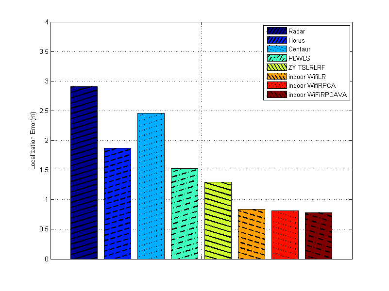
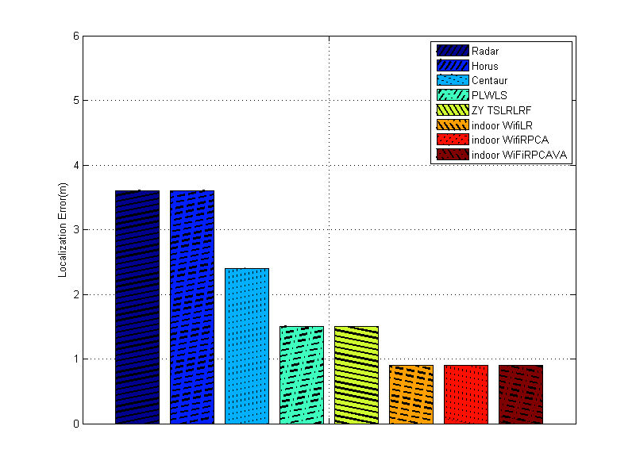

Contents
close all
load('Square_Speed_Error_Radar_ALL.mat')
load('Square_Speed_Error_PLWLS_ALL.mat')
load('Square_Speed_Error_Horus_ALL.mat')
load('Square_Speed_Error_Indoor_WifiRPCAVA_ALL.mat')
load('Square_Speed_Error_Centaur_ALL.mat')
error_Indoor_WifiRPCAVA = error_Indoor;
load('Square_Speed_Error_Indoor_WifiLR_ALL.mat')
error_Indoor_WifiLR_ALL = error_Indoor;
load('Square_Speed_Error_Indoor_WifiRPCA_ALL.mat')
error_Indoor_WifiRPCA = error_Indoor;
load('Square_Speed_Error_TSLRL_RF_ALL.mat')
set figure
stepVec = 0:0.3:8;
n = zeros(8, length(stepVec));
[n(1, :), ~] = hist(error_Radar(:), stepVec);
[n(2, :), ~] = hist(error_Horus(:), stepVec);
[n(3, :), ~] = hist(error_Centaur(:), stepVec);
[n(4, :), ~] = hist(error_PLWLS(:), stepVec);
[n(5, :), ~] = hist(Error_TSLRL_RF(:), stepVec);
[n(6, :), ~] = hist(error_Indoor_WifiLR_ALL(:), stepVec);
[n(7, :), ~] = hist(error_Indoor_WifiRPCA(:), stepVec);
[n(8, :), ~] = hist(error_Indoor_WifiRPCAVA(:), stepVec);
call discoDrawFigure draw figure
info.plotType = 1;
info.ytick = 0:.2:1;
info.xtick = 0:1:9;
info.xlabel = 'localization error (m)';
info.ylabel = 'CDF';
info.title = 'localization error';
info.LengendText = {'Radar', 'Horus', 'Centaur', 'PLWLS',...
'ZY TSLRLRF', 'indoor WifiLR', 'indoor WifiRPCA', 'indoor WiFiRPCAVA',};
stepY = cumsum(n, 2)/Network.T/Network.N;
[handle]=discoDrawFigure(stepVec, stepY, info);

draw figure compare different localization scheme
num = sum(n(1, :));
errorIndoor= {error_Radar, error_Centaur,error_Horus, error_PLWLS,...
Error_TSLRL_RF, error_Indoor_WifiLR_ALL, error_Indoor_WifiRPCA, error_Indoor_WifiRPCAVA};
error50 = zeros(8, 1);
error80 = zeros(8, 1);
Mean_error = zeros(8, 1);
for i = 1:8
error50(i) = stepVec(find_error(n(i, :), num, 0.5));
error80(i) = stepVec(find_error(n(i, :), num, 0.8));
Mean_error(i) = mean(mean(errorIndoor{i}(:)));
end
figure
yy = [error50 Mean_error error80];
xx = 1:3;
h = bar(xx', yy');
grid on;
[~, object_h, ~, text_string] = legend('Radar', 'Horus', 'Centaur', 'PLWLS',...
'ZY TSLRLRF', 'indoor WifiLR', 'indoor WifiRPCA', 'indoor WiFiRPCAVA', 1);
hpl = findobj(object_h,'type','patch');
hp = findobj(h,'type','patch');
lineType = {'-', '--', ':', '-.', '-', '--', ':', '-.'};
barAngle = [45 45 45 45 135 135 135 135];
for i = 1:8
hatch(hpl(i),barAngle(i),'k',lineType{i},3,1.5);
hatch(hp(i),barAngle(i),'k',lineType{i},4,2);
end
set(gca,'xticklabel',{'', '', ''});
axis([0.55 1.45 0 2.5])
ylabel('Localization Error(m)');
set(gcf,'Position',[100,100,800,600]);

figure
yy = [error50 Mean_error error80];
xx = 1:3;
h = bar(xx', yy');
grid on;
[legend_h, object_h, plot_h, text_string] = legend('Radar', 'Horus', 'Centaur', 'PLWLS',...
'ZY TSLRLRF', 'indoor WifiLR', 'indoor WifiRPCA', 'indoor WiFiRPCAVA', 1);
hpl = findobj(object_h,'type','patch');
hp = findobj(h,'type','patch');
lineType = {'-', '--', ':', '-.', '-', '--', ':', '-.'};
barAngle = [45 45 45 45 135 135 135 135];
for i = 1:8
hatch(hpl(i),barAngle(i),'k',lineType{i},3,1.5);
hatch(hp(i),barAngle(i),'k',lineType{i},4,2);
end
set(gca,'xticklabel',{'', '', ''});
axis([1.55 2.45 0 4])
ylabel('Localization Error(m)');
set(gcf,'Position',[100,100,800,600]);

figure
yy = [error50 Mean_error error80];
xx = 1:3;
h = bar(xx', yy');
grid on;
[legend_h, object_h, plot_h, text_string] = legend('Radar', 'Horus', 'Centaur', 'PLWLS',...
'ZY TSLRLRF', 'indoor WifiLR', 'indoor WifiRPCA', 'indoor WiFiRPCAVA', 1);
hpl = findobj(object_h,'type','patch');
hp = findobj(h,'type','patch');
lineType = {'-', '--', ':', '-.', '-', '--', ':', '-.'};
barAngle = [45 45 45 45 135 135 135 135];
for i = 1:8
hatch(hpl(i),barAngle(i),'k',lineType{i},3,1.5);
hatch(hp(i),barAngle(i),'k',lineType{i},4,2);
end
set(gca,'xticklabel',{'', '', ''});
axis([2.55 3.45 0 6])
ylabel('Localization Error(m)');
set(gcf,'Position',[100,100,800,600]);
